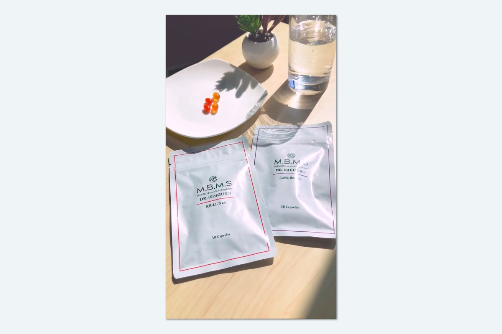

KRiLL Next/LuNa Beauty パッケージ＆カプセル動画

▶
...
Instagram投稿
| 制作期間 | 2026年3月 |
| 制作時間 | 約15時間 |
| 依頼元 | MBMS |
| 媒体 | 動画、Instagram（リール）、LINE |
| 使用アプリ | Premiere Pro |
制作背景・意図
M.B.M.S初のパウチ商品「KRiLL Next」と「LuNa Beauty」を訴求するショート動画の制作を担当しました。予算節約のためスタジオ撮影の代わりに自宅をスタジオ代わりにセッティングし、自然光が差し込む午前中にiPhoneで撮影。オイルカプセルの美しい色味や透明感を最大限引き立て、白を基調としたシンプルで清潔感のある映像美にこだわりました。
前半はAdobeStockの無料動画素材を活用し、商品の実写カットを交互に挿入。Premiere Proで色味を調整し、素材と実写が一体に見えるよう配慮。ウェルネス意識の高い日常シーンに自然に溶け込むようイメージビデオ風に仕上げ、BGM選定や、カプセルが皿で転がる音・水を注ぐ音をそのまま使うことで印象的なリズムを生みました。
最後はパウチをバッグに入れるカットで持ち運びの手軽さも訴求。全40秒にまとめ、リピート視聴されやすいテンポと内容を意識しました。